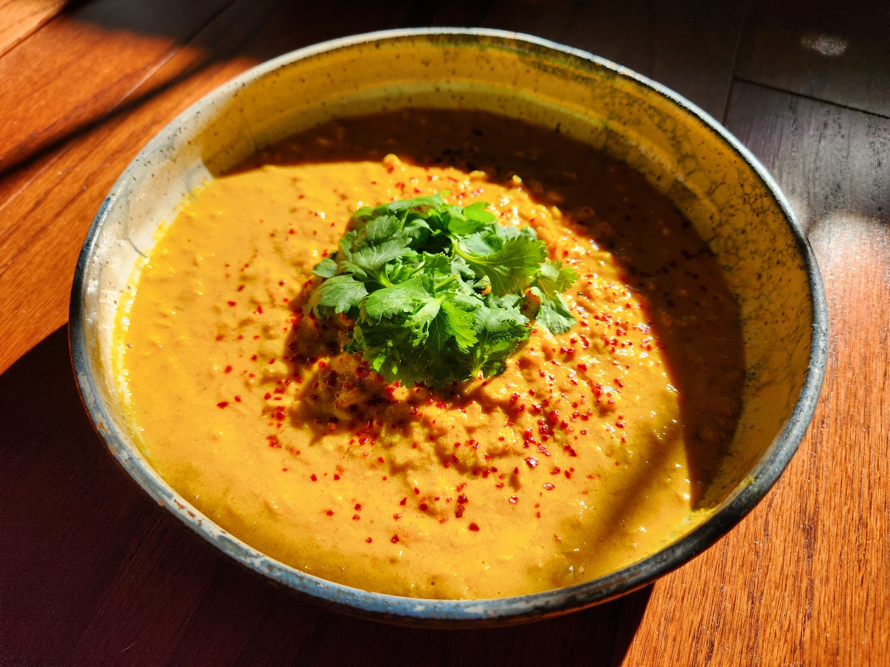

< RECIPES

Masoor Dal
Masoor Dal ( Red Lentil Curry )
Approachable flavor, rich & hearty without feeling heavy
Ingredients & Steps
5 servings
Boil for 5 minutes; drain and rinse
aromatics
spices + seasoning
Simmer until lentils are tender (10–15 min)
Simmer until thickened (~8 min)
garnish
Sources
Rainbow Plant LifeNotes
- Ground turmeric can be subbed with an equal amount of fresh turmeric. Cook with other fresh aromatics.
December 2023
times cooked : 3